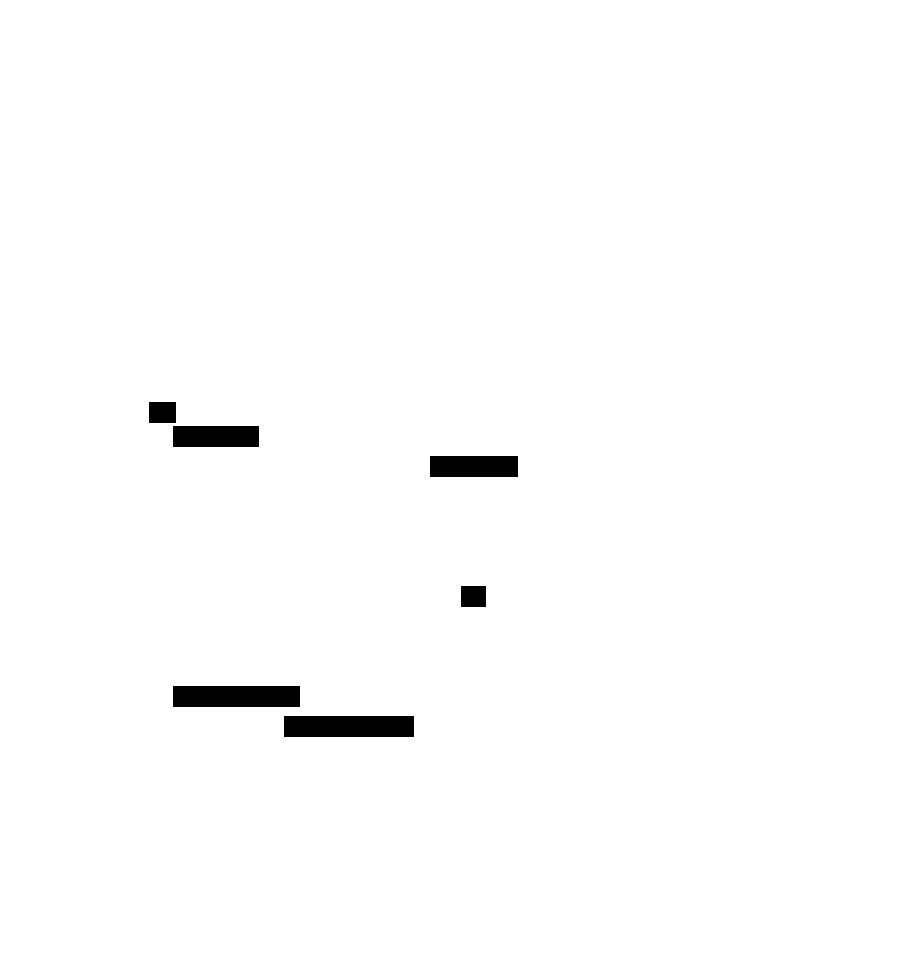

Scheduler Developement in Dagster
NOTE: originally, a set of workflows was generated for each source. These were compiled into separate 'project' containers by a github workflo This is no longer needed. But these were the original instructions.
Note
add envfile plug in to PyCharm to allow for easy debugging to code
About
The following is a description of the steps and requirements for building and deploying the docker based workflow implemented in dagster.
when developing, you can use dagster dev
you need to have the environment variables defined, so it's easist to do in a
Pycharm run shell script.
You can use a python module, dagster with option dev load the runConfiguration dagster_eco_debug.run.xml
Template files
The template files define the Dagster Ops, Jobs and Schedules. From these and a GleanerIO config file a set of Python scripts for Dagster are created in the output directory.
These only need to be changed or used to regenerate if you wish to alter the execution graph (ie, the ops, jobs and schedules) or change the config file. In the later case only a regeneration needs to be done.
There are then Docker build scripts to build out new containers.
See: template
Steps to build and deploy
The deployment can be tested locally using docker. The production 'containers' are built with a github action, or using a makefile.
This describes the local and container deployment We use portainer to manage our docker deployments.
1) move to the the deployment directory
2) copy the envFile.env to .env
3) edit the entries.
4) for local, ./dagster_localrun.sh
5) go to http://localhost:3000/
To deploy in portainer, use the deployment/compose_project.yaml docker stack.
docker compose Configuration:
1) there are three files that need to be installed into docker configs.
| file | local | stack | note |
|---|---|---|---|
| workspace | configs/PROJECT/worksapce.yaml | env () | used by dagster |
| gleanerconfig.yaml | configs/PROJECT/gleanerconfigs.yaml | env () | needs to be in portainer |
| nabuconfig.yaml | configs/PROJECT/nabuconfigs.yaml | env () | needs to be in portainer |
| 2) |
Editing Template
you can edit implnets/template
then deploy with
`pygen.py -cf ./configs/eco/gleanerconfig.yaml -od ./generatedCode/implnet-eco/output -td ./templates/v1 -d 7 ``
If you are running using dagster_localrun.sh 1) go to the deployment at http://localhost:3000/locations 2) click 'reload on gleaner@project_grpc' 3) then if code is correct, then you will be able run the changed workflows
(TODO NEEDS MORE )
Environment files
1) cp deployment/envFile.env .env
2) edit
3) export $(cat .env | xargs)
export $(cat .env | xargs)
######
# Nabu and Gleaner configs need to be in docker configs
## docker config name GLEANER_GLEANER_DOCKER_CONFIG
## docker config name GLEANER_NABU_DOCKER_CONFIG
# suggested DOCKER_CONFIG NAMING PATTERN (nabu||gleaner)-{PROJECT}
########
GLEANERIO_GLEANER_DOCKER_CONFIG=gleaner-eco
GLEANERIO_NABU_DOCKER_CONFIG=nabu-eco
# ###
# workspace for dagster
####
GLEANERIO_WORKSPACE_CONFIG_PATH=/usr/src/app/workspace.yaml
GLEANERIO_WORKSPACE_DOCKER_CONFIG=workspace-eco
DEBUG=False
GLEANERIO_CONTAINER_WAIT_SECONDS=300
# debuggin set to 5 or 10 seconds
PROJECT=eco
CONTAINER_CODE_TAG=latest
CONTAINER_DAGSTER_TAG=latest
#PROJECT=iow
#PROJECT=oih
HOST=localhost
PROTOCOL_BUFFERS_PYTHON_IMPLEMENTATION=python
# port is required: https://portainer.{HOST}:443/api/endpoints/2/docker/
PORTAINER_URL=
PORTAINER_KEY=
# if running dagster-dev, then this needs to be set ,
# defaults to "/scheduler/gleanerconfig.yaml" which is path to config mounted in containers
# when debugging generated code "../../../configs/eco/gleanerconfig.yaml"
# when debugging code in workflows "../../configs/eco/gleanerconfig.yaml"
# DAGSTER_GLEANER_CONFIG_PATH=../../../configs/eco/gleanerconfig.yaml
GLEANERIO_CONTAINER_WAIT_SECONDS=3600
#GLEANERIO_CONTAINER_WAIT_SECONDS=30
# Network
GLEANERIO_HEADLESS_NETWORK=headless_gleanerio
### GLEANER/NABU Dockers
GLEANERIO_GLEANER_IMAGE=nsfearthcube/gleaner:latest
GLEANERIO_NABU_IMAGE=nsfearthcube/nabu:latest
##
# path where configs are deployed/mounted
####
GLEANERIO_GLEANER_CONFIG_PATH=/gleaner/gleanerconfig.yaml
GLEANERIO_NABU_CONFIG_PATH=/nabu/nabuconfig.yaml
###
#path in s3 for docker log files
GLEANERIO_LOG_PREFIX=scheduler/logs/
GLEANERIO_MINIO_ADDRESS=
GLEANERIO_MINIO_PORT=80
GLEANERIO_MINIO_USE_SSL=false
GLEANERIO_MINIO_BUCKET=
GLEANERIO_MINIO_ACCESS_KEY=
GLEANERIO_MINIO_SECRET_KEY=
GLEANERIO_HEADLESS_ENDPOINT=http://headless:9222
# just the base address, no namespace https://graph.geocodes-aws-dev.earthcube.org/blazegraph
GLEANERIO_GRAPH_URL=
GLEANERIO_GRAPH_NAMESPACE=
# example: https://graph.geocodes.ncsa.illinois.edu/blazegraph/namespace/yyearthcube2/sparql
#graph endpoint will be GLEANERIO_GRAPH_URL
GLEANERIO_SUMMARY_GRAPH_NAMESPACE=
GLEANERIO_SUMMARIZE_GRAPH=True
Implementation Networks
This (https://github.com/sharmasagar25/dagster-docker-example) is an example on how to structure a [Dagster] project in order to organize the jobs, repositories, schedules, and ops. The example also contains examples on unit-tests and a docker-compose deployment file that utilizes a Postgresql database for the run, event_log and schedule storage.
This example should in no way be considered suitable for production and is merely my own example of a possible file structure. I personally felt that it was difficult to put the Dagster concepts to use since the projects own examples had widely different structure and was difficult to overview as a beginner.
The example is based on the official [tutorial].
Folders
- build: build directives for the docker containers
- configs
- src
- tooling
Requirements
At this point it is expected that you have a valid Gleaner config file named gleanerconfig.yaml located in some path within the configs directory.
Building the dagster code from templates
The python program pygen will read a gleaner configuration file and a set of template and build the Dagster code from there.
python pygen.py -cf ./configs/nsdf/gleanerconfig.yaml -od ./src/implnet-nsdf/output -td ./src/implnet-nsdf/templates -d 7Running
There is an example on how to run a single pipeline in src/main.py. First
install the dependencies in an isolated Python environment.
pip install -r requirementsThe code built above can be run locally, though your templates may be set up to reference services and other resources not present on your dev machine. For complex examples like these, it can be problematic.
If you are looking for some simple examples of Dagster, check out the directory examples for some smaller self-contained workflows. There are good for testing things like sensors and other approaches.
If you wish to still try the generated code cd into the output directory you specified in the pygen command.
Then use:
dagit -h ghost.lan -w workspace.yamlBuilding
podman build -t docker.io/fils/dagster:0.0.24 . podman push docker.io/fils/dagster:0.0.24Appendix
Setup

Docker API sequence

Appendix
Portainer API setup
You will need to setup Portainer to allow for an API call. To do this look at the documentation for Accessing the Portainer API
Notes
Single file testing run
dagit -h ghost.lan -f test1.py- Don't forget to set the DAGSTER_HOME dir like in
export DAGSTER_HOME=/home/fils/src/Projects/gleaner.io/scheduler/python/dagsterdagster-daemon runRun from directory where workspace.yaml is.
dagit --host 192.168.202.159Cron Notes
A useful on-line tool: https://crontab.cronhub.io/
0 3 * * * is at 3 AM each day
0 3,5 * * * at 3 and 5 am each day
0 3 * * 0 at 3 am on Sunday
0 3 5 * * At 03:00 AM, on day 5 of the month
0 3 5,19 * * At 03:00 AM, on day 5 and 19 of the month
0 3 1/4 * * At 03:00 AM, every 4 daysIndexing Approaches
The following approaches
- Divide up the sources by sitemap and sitegraph
- Also divide by production and queue sources
The above will result in at most 4 initial sets.
We can then use the docker approach
./gleanerDocker.sh -cfg /gleaner/wd/rundir/oih_queue.yaml --source cioosatlanticto run indexes on specific sources in these configuration files.